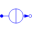

ConstantCurrentSource for constant current |
|
Information
This information is part of the Modelica Standard Library maintained by the Modelica Association.
The ConstantCurrent source is a simple source for an ideal constant current which is provided by a parameter. There is no internal resistance modeled. No further effects are modeled. Especially, the current flow will never end.
Parameters (1)
| I |
Value: Type: Current (A) Description: Value of constant current |
|---|
Connectors (2)
| p |
Type: PositivePin Description: Positive electrical pin |
|
|---|---|---|
| n |
Type: NegativePin Description: Negative electrical pin |
Used in Examples (2)
|
Modelica.Electrical.Machines.Examples.InductionMachines Induction machine with DC current braking |
|
|
Modelica.Magnetic.FluxTubes.Examples.MovingCoilActuator Force-stroke characteristic of the permeance model at constant current |
Used in Components (2)
|
Modelica.Electrical.Machines.BasicMachines.DCMachines Permanent magnet DC machine |
|
|  |
Modelica.Electrical.Polyphase.Sources Polyphase constant current source |